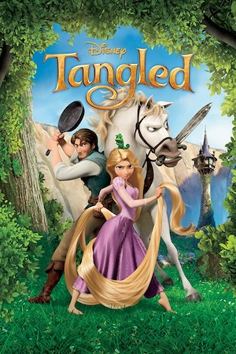
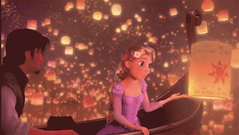

Summary

Tangled starts with an old lady named Mother Gothel. She finds a magical flower in the forest and finds that when she sings to the flower, it has magical powers to make her young again. The royal family of Corona sent out their soldiers to find that magic flower of healing to heal their queen, who was sick and pregnant with the princess. After the queen drank soup made from the flower, she heals and gives birth to a beautiful baby princess. Mother Gothel saw that her magical flower has been stolen. So, she breaks into the royal family's castle and kidnaps the princess. The princess, named Rapunzel, is raised by Mother Gothel and has been locked in a tower, unknown of her heritage. She saw these "floating lights" from her window on the same night every year. She urges to find those lights. A strange man breaks into the tower. His name is Flynn Rider. She convinces Flynn to take her to see the "floating lights." She soon escapes her tower to explore the world around her and finds herself having visions of her early childhood in the palace. She figures out that she is the lost princess and that Mother Gothel is not her real mother. Once she figured out that Mother Gothel was her kidnapper, Flynn and Rapunzel battle with Mother Gothel. Eventually Rapunzel finds her way back to the palace to get crowned again as the rightful princess. Flynn and Rapunzel end in a happily ever after.
Key Moment

Rapunzel has escaped her tower with Flynn Rider, and they are now finally seeing the floating lights in a romantic canoe. Rapunzel is in awe of all the lanterns in the sky and Flynn realizes he is in awe of her. They sing in a love song and soon to end with a kiss, but something catches Flynn's eye. In the corner of his eye, he spots two large men watching and walking away. These men have been after Flynn Rider and have not been able to catch him. Flynn, in his distraction, leaves Rapunzel hanging and docks the canoe.